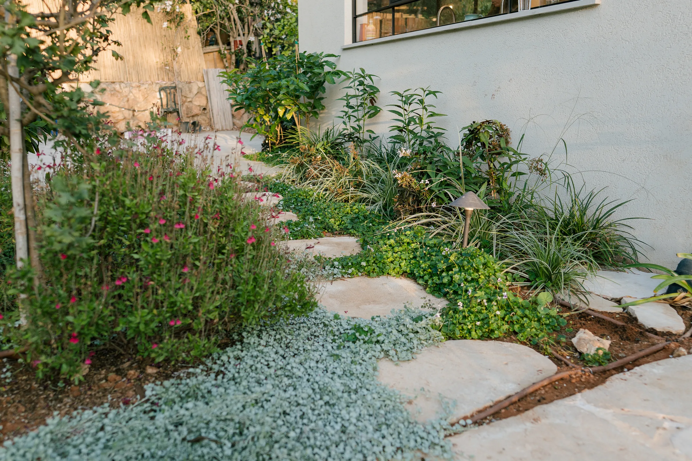
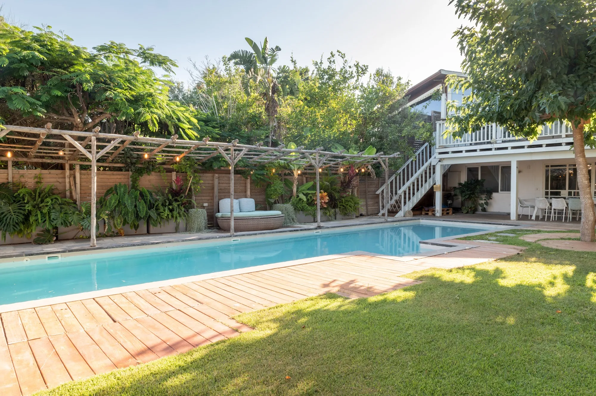
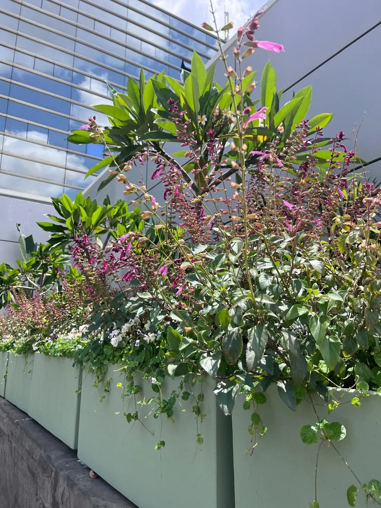
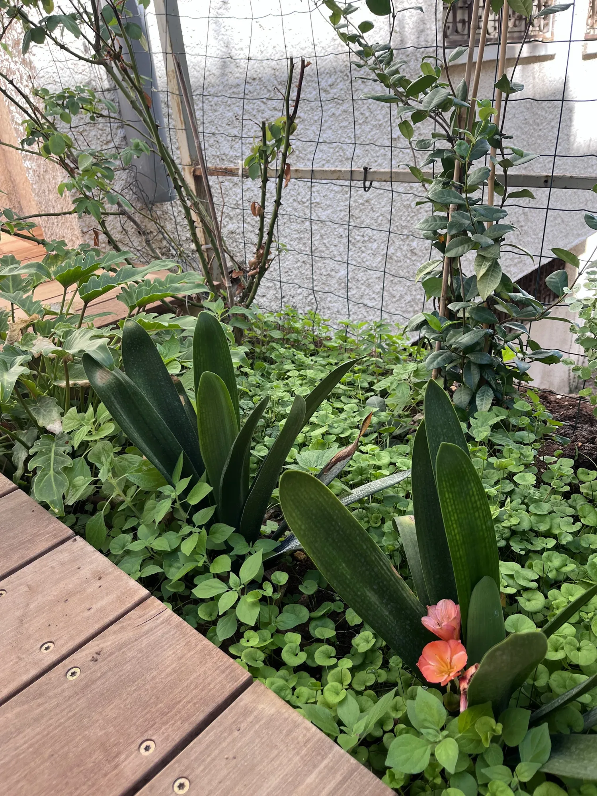
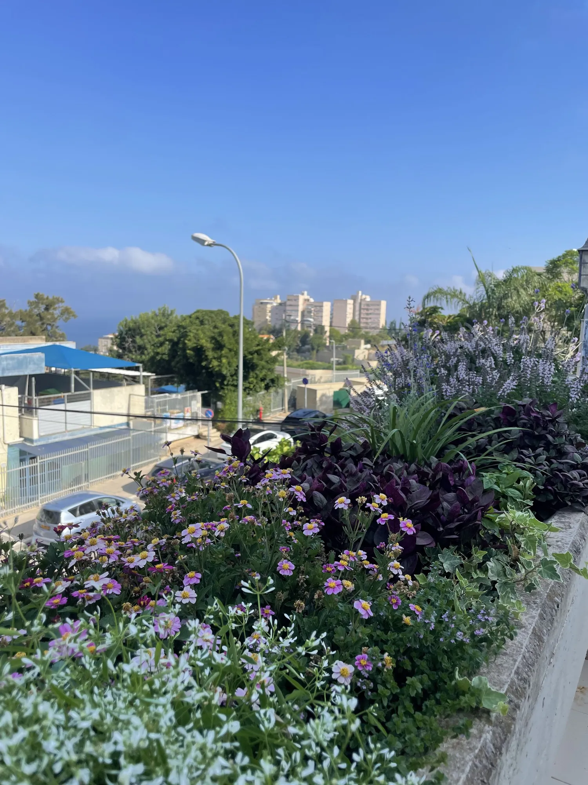

גינה שנבנתה לפי תוכנית
הקמת גינה פרטית · זכרון יעקב
לגינה
תיק עבודות
כל גינה מתחילה בצורך אחר: מתנת יום הולדת, פאטיו בלי שמש, רצועה צרה בכניסה, גינה שמזינה משפחה ומטופלים.

הקמת גינה פרטית · זכרון יעקב
לגינה
שיקום גינה שלמה · קיסריה
לגינה
שיקום חצר פרטית · חיפה
לגינה
מערך אדניות בכניסה לבניין משרדים · רמת השרון
לגינה
שדרוג מבואת כניסה · עתלית
לגינה
חיפה
לגינה
חיפה
לגינהספרו לנו מה יש לכם היום, חצר, מרפסת או רצועה בכניסה, ומה הייתם רוצים שיהיה שם.
לתיאום פגישת היכרות